전기공사기사 (2006-09-10 기출문제)
1과목: 전기응용 및 공사재료
1. 각 방향의 배광이 균일한 광도 I인 광원을 그림과 같이 배치하였을 경우 수평거리 a[m]가 일정할 때 점 P에서의 수평면 조도가 최대가 되는 광원의 높이(h)는 몇 m인가?
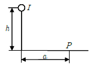
- a
- √2a
- a/√2
- √3a
(정답률: 58%)

2. 다음 형광 방전관의 색깔 중 그 온도가 가장 높은 것은?
- 백색
- 주광색
- 은백색
- 적색
(정답률: 86%)
3. 반도체에 빛이 가해지면 전기 저항이 변화되는 현상은?
- 열진동효과
- 광전효과
- 제백효과
- 홀효과
(정답률: 92%)
4. 화학공장 등 산∙알칼리 또는 유해가스가 존재하는 장소에 가장 적합한 진동기는?
- 방적형 진동기
- 방수형 진동기
- 방부형 진동기
- 방진형 진동기
(정답률: 73%)
5. 조명에서 칸델라[cd]는 무엇의 단위인가?
- 휘도
- 조도
- 광도
- 광속발산도
(정답률: 84%)
6. 전지에서 분극 작용에 의한 전압강하를 방지하기 위하여 사용되는 감극제는?
- H2O
- H2SO4
- MnO2
- CdSD4
(정답률: 69%)
7. 다음 중 전기 철도용 변전소간의 간격을 짧게 하는 이유로 가장 타당한 것은?
- 유지보수를 용이하게 하기 위하여
- 절연저항을 적게 하기 위하여
- 전식을 적게 하기 위하여
- 건설비를 적게 하기 위하여
(정답률: 83%)
8. 권상 하중이 100t 이며, 1.5m/min의 속도로 물체를 들어올리는 권상기용 전동기의 용량은 약 몇 kW인가? (단, 전동기를 포함한 기중기의 총 효율은 70%이다)
- 50
- 40
- 35
- 30
(정답률: 75%)
9. 저항용접에서 접한면의 일부가 녹아 바둑알 모양의 단면으로 오목하게 들어간 부분을 무엇이라 하는가?
- 슬럭(slog)
- 용입
- 너깃(nugget)
- 플럭스(flux)
(정답률: 65%)
10. 200W 전구를 우유색 구형 글로브에 넣었을 경우 우유색 유리의 반사율을 40%, 투과율을 50%라고 할 때 글로브의 효율은 약 몇 % 인가?
- 40
- 55
- 83
- 104
(정답률: 85%)
11. 배선 기구라 함은 다음 중 어느 것인가?
- 전선을 접속하는데 필요한 와이어 커넥터
- 스위치(텀블러) 및 콘센트류
- 전선 및 케이블을 단말처리 할 때 필요한 압착 터미널류
- 전선 및 케이블을 전선관에 입선 할 때 필요한 공구
(정답률: 64%)
12. 접지 저감제의 구비조건 중 틀린 것은?
- 지속성이 없을 것
- 전극을 부식시키지 않을 것
- 전기적으로 양도체일 것
- 안전할 것
(정답률: 92%)
13. 다음 중 절연재료에서 직접적인 열화의 가장 큰 원인에 해당되는 것은?
- 자외선
- 온도상승
- 산화
- 유전손
(정답률: 91%)
14. 방폭배관의 부속품이 아닌 것은?
- 씨링 휘팅
- 드레인 휘팅
- 타워 휘팅
- 콘듀레이트 휘팅
(정답률: 74%)
15. 전선 재료로서 구비할 조건 중 틀린 것은?
- 도전률이 클 것
- 접속이 쉬울 것
- 내식성이 작을 것
- 가요성이 풍부할 것
(정답률: 91%)
16. 방전등의 일종으로 효율이 좋으며 빛의 투과율이 크고 황색의 단색광이며 안개속을 잘 투과하는 등은?
- 나트륨등
- 옥소전구
- 형과등
- 수은등
(정답률: 93%)
17. 다음은 전선의 기호와 절연제를 연결한 것이다. 잘못된 것은?
- FL-천연고무
- DV-비닐
- EV-폴리에틸렌
- NRC-고무
(정답률: 71%)
18. 다음 중 알칼리축전지를 설명한 것으로 틀린 것은?
- 공칭전압은 1.2[V/셀]이다.
- 연축전지에 비하여 과방전, 과전류에 대해 강하다.
- 고율 방전 특성이 좋다.
- 전해액의 비중에 의해 충방전 상태를 추정할 수 있으며 Ah당 단가가 낮다.
(정답률: 78%)
19. 분전함에 대한 설명 중 틀린 것은?
- 반(盤)의 옆쪽 또는 이면에 설치하는 가터(gutter)는 강판제로서 전선을 구부리거나 눌리지 아니할 정도로 충분히 큰 것이어야 한다.
- 목제함은 최소두께 1.0cm(뚜껑 포함)이상 으로 불연성 물질을 안에 바른 것이어야 한다.
- 난연성 합성수지로 된 것은 두께 1.5mm 이상으로 내아크성인 것이어야 한다.
- 강판제의 것은 일반적인 경우 두께 1.2mm 이상이어야 한다.
(정답률: 85%)
20. 금속관공사의 박스내에 전선을 접속할 때 가장 많이 사용하는 재료는?
- 와이어 커넥터
- 코드 커넥터
- S슬리브
- 컬 플러그
(정답률: 84%)
2과목: 전력공학
21. 직접접지방식이 초고압 송전선에 채용되는 이유 중 가장 적당한 것은?
- 지락고장시 병행 통신선에 유기되는 유도전압이 작기 때문에
- 지락시의 지락전류가 적으므로
- 계통의 절연을 낮게 할 수 있으므로
- 송전선의 안정도가 높으므로
(정답률: 12%)
22. 송전계통의 접지에 대한 설명으로 옳은 것은?
- 소호리액터 접지방식은 선로의 정전용량과 직렬공진을 이용한 것으로 지락전류가 타 방식에 비해 좀 큰 편이다.
- 고저항 접지방식은 이중고장을 발생시킬 확률이 거의 없으나, 비접지식보다는 많은 편이다.
- 직접접지방식을 채용하는 경우 이상전압이 낮기 때문에 변압기 선정시 단절연이 가능하다.
- 비접지방식을 택하는 경우, 지락전류의 차단이 용이하고 장거리 송전을 할 경우 이중고장의 발생을 예방하기 좋다.
(정답률: 11%)
23. 다음 계전기 특성곡선에서 D가 의미하는 특성은?
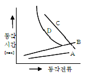
- 반한시성 정한시특성
- 반한시특성
- 정한시특성
- 순한시특성
(정답률: 9%)
24. 직류송전방식에 비하여 교류송전방식의 가장 큰 이점은?
- 선로의 리액턴스에 의한 전압강하가 없으므로 장거리 송전에 유리하다.
- 지중송전의 경우, 충전전류와 유전체손을 고려하지 않아도 된다.
- 변압이 쉬워 고압송전에 유리하다.
- 같은 절연에서 송전전력이 크게 된다.
(정답률: 9%)
25. 특고 수용가가 근거리에 밀집하여 있을 경우, 설비의 합리화를 기할 수 있고, 경제적으로 유리한 지중 송전계통의 구성 방식은?
- 루프(loop) 방식
- 수지상 방식
- 방사상 방식
- 유니트(unit) 방식
(정답률: 7%)
26. 변압기를 보호하기 위한 계전기로 사용되지 않는 것은?
- 비율차동계전기
- 온도계전기
- 브흐훌쯔계전기
- 선택접지계전기
(정답률: 8%)
27. 200kVA 단상변압기 2대를 V-V결선하여 사용하면 약 몇 kVA 부하까지 걸 수 있겠는가?
- 200
- 283
- 346
- 400
(정답률: 16%)
28. 가공전선의 구비조건으로 옳지 않은 것은?
- 도전율이 클 것
- 기계적 강도가 클 것
- 비중이 클 것
- 신장률이 클 것
(정답률: 13%)
29. 우리나라의 154kV 송전계통에서 채택하는 접지방식은?
- 비접지방식
- 직접접지방식
- 고저항접지방식
- 소호리액터접지방식
(정답률: 8%)
30. 다음 중 부하 전류의 차단에 사용되지 않는 것은?
- NFB
- OCB
- VCB
- DS
(정답률: 15%)
31. 수력학에 있어서 수두(水頭)의 단위는?
- m
- kg∙ m
- kg/m
- kg/mm3
(정답률: 9%)
32. 옥내배선의 전선의 굵기를 결정할 때 고려되는 사항이 아닌 것은?
- 절연저항
- 전압강하
- 허용전류
- 기계적강도
(정답률: 13%)
33. 다음 중 무부하시의 전류 차단을 목적으로 사용하는 것은?
- 진공차단기
- 유입차단기
- 단로기
- 자기차단기
(정답률: 15%)
34. 전압 66kV, 주파수 60Hz, 길이 12km 의 3상3선식 1회선 지중 송전선로가 있다. 케이블의 삼선 1선당의 정전 용량이 0.04㎌/km 라고 할 때 이 선로의 3상 무부하 충전용량은 약 몇 kVA인가?
- 5,569
- 7,876
- 11,138
- 13,642
(정답률: 6%)
35. 길이가 35km 인 단상 2선식 전선로의 유도리액턴스는 약 몇 Ω 인가? (단, 전선로의 단위길이당 인덕턴스는 1.3mH/km/선, 주파수는 60Hz이다.)
- 18
- 26
- 34
- 40
(정답률: 4%)
36. 어느 발전소에 주발전기로서 3상 93,000kVA 인 것이 4기 있다. 이들은 50Hz 에 대해서는 167rpm, 60Hz에 대해서는 200rpm 으로 회전한다. 이 발전기는 몇 극인가?
- 18
- 36
- 54
- 72
(정답률: 15%)
37. 계통 연계의 이점이 아닌 것은?
- 고장시 단락용량이 줄어든다.
- 공급 신뢰도가 증대된다.
- 공급예비력이 절감된다.
- 부하율이 향상된다.
(정답률: 11%)
38. 송전계통의 안정도 증진방법으로 틀린 것은?
- 직렬리액턴스를 작게한다.
- 중간조상방식을 채용한다.
- 계통을 연계한다.
- 원동기의 조속기 작동을 느리게 한다.
(정답률: 9%)
39. 원자로의 제어재가 구비하여야 할 조건으로 틀린 것은?
- 중성자 흡수 단면적이 적을 것
- 높은 중성자속에 장시간 그 효과를 간직할 것
- 열과 방사선에 대하여 안정할 것
- 내식성이 크고 기계적 가공이 용이할 것
(정답률: 13%)
40. 유도장해를 방지하기 위한 전력선측의 대책으로 옳지 않은 것은?
- 소호리액터를 채용한다.
- 차폐선을 설치한다.
- 중성점 전압을 가능한 높게 한다.
- 중성점 접지에 고저함을 넣어서 지락전류를 줄인다.
(정답률: 8%)
3과목: 전기기기
41. 전동기 축의 빌트 축 지름이 28cm, 매분 1140rpm에서 20kW를 전달하고 있다. 벨트에 작용하는 힘은 약 몇 kgf 인가?
- 122
- 168
- 212
- 234
(정답률: 5%)
42. 출력 50MVA, 정격전압 11kV 의 3상 교류발전기에서 무부하 단자전압이 11kV일 때, 단락전류는 1,987A이다. 단위법 [P.U]으로 표시한 동기임피던스는 약 얼마인가?
- 0.76
- 0.98
- 1.32
- 1.57
(정답률: 7%)
43. 직류기의 결선방식 중 분권 계자권선과 직권 계자권선이 전기자권선에 연결된 방식은?
- 타여자방식
- 분권방식
- 직권방식
- 복권방식
(정답률: 8%)
44. 직류기의 권선법에 관한 설명으로 틀린 것은?
- 단형 파권으로 하면 단중 중권의 P/2배의 유기전압이 발생한다.
- 중권으로 하면 균압환이 필요없다.
- 단중 중권의 병렬회로수는 극수와 같다.
- 중권이나 파권의 권선법은 모두 진권 및 여권을 할 수 있다.
(정답률: 11%)
45. 3상 유도기에서 출력의 변환식으로 옳은 것은?
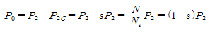
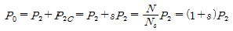
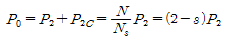
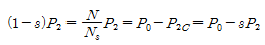
(정답률: 10%)
46. 60Hz인 3상 8극 및 2극의 유도전동기를 차동 종속으로 접속하여 운전할 때의 무부하 속도는 몇 rpm 인가?
- 720
- 900
- 1,000
- 1,200
(정답률: 13%)
47. 유도 전동기의 슬립(slip) S의 범위는?
- 1 > S > 0
- 0 > S > -1
- 2 > S > 1
- -1 < S < 1
(정답률: 19%)
48. 변압기의 등가회로 작성에 필요한 시험은?
- 구속시험
- 단락시험
- 유도시험
- 반환부하시험
(정답률: 10%)
49. 동기 발전기의 병렬운전 조건으로 적합하지 않은 것은?
- 상회전 방향이 같을 것
- 기전력이 위상과 같을 것
- 부하 전류가 같을 것
- 기전력의 주파수가 같을 것
(정답률: 12%)
50. 4극 60 Hz의 3상 동기 발전기가 있다. 회전자 주변속도를 200 m/s 이하로 하려면 회전자의 지름을 약 몇 m로 하여야 하는가?
- 2.1
- 2.6
- 3.1
- 3.5
(정답률: 6%)
51. 사이클로컨버터(cycloconverter)란?
- 실리콘 양뱡향성 소자이다.
- 제어정류기를 사용한 주파수 변환기이다.
- 직류 제어소자이다.
- 전류 제어소자이다.
(정답률: 14%)
52. 변압기의 병렬운전에서 필요조건이 아닌 것은?
- 극성이 같을 것
- 정격전압이 같을 것
- % 임피던스 강하가 같을 것
- 출력이 같을 것
(정답률: 7%)
53. 직류기의 경부하 또는 과부하로 운전하면 효율은 어떻게 되는가?
- 효율이 떨어진다.
- 효율과 부하와는 무관하다.
- 효율이 최대로 된다.
- 초기에는 떨어지나 시간이 지나면 증가한다.
(정답률: 6%)
54. 유도 전동기의 공급전압이 일정하고, 전원 주파수만 낮아질 때 일어나는 현상으로 옳은 것은?
- 여자전류가 감소한다.
- 철손이 감소한다.
- 온도상승이 커진다.
- 회전속도가 증가한다.
(정답률: 7%)
55. AC 서보전동기(AC servomotor)의 설명 중 틀린 것은?
- AC 서보전동기는 그다지 큰 회전력이 요구되지 않는 시스템에 사용되는 전동기이다.
- 이 전동기에는 기준권선과 제어권선의 두 고정 자권선이 있으며, 90°위상차가 있는 2상 전압을 인가하여 회전자계를 만든다.
- 고정자의 기준권선에는 정전압을 인가하여, 제어 권선에는 제어용 전압을 인가한다.
- 이 전동기는 속도 회전력 특성을 선형화하고 제어 전압을 입력으로 회전자의 회전각을 출력으로 보았을 때 이 전동기의 전달함수는 미분요소와 2차 요소의 직렬 결합으로 볼 수 있다.
(정답률: 8%)
56. 동기기의 전기자 저항을 T, 전기자 반작용 리액턴스 Xa 누설 리액턴스를 Xℓ 이라고 하면, 동기 임피던스를 표시하는 식은?
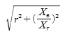
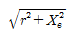
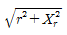
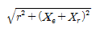
(정답률: 14%)
57. 단상 유도전압조정기에서 1차 전원전압을 Vt이라 하고, 2차의 유도전압을 E2라고 할 때 부하 단자전압을 연속적으로 가변할 수 있는 조정 범위는?
- 0 ~ V1까지
- V1 + E1까지
- V1 - E1까지
- V1 + E2에서 V1 - E2까지
(정답률: 10%)
58. 그림과 같은 정류회로에서 전류계의 지시값은 약 몇 mA인가? (단, 전류계는 가동코일형이고 정류기 저항은 무시한다)
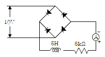
- 1.8
- 4.5
- 6.4
- 9.0
(정답률: 10%)
59. 변압기에 사용되는 절연유의 특성으로 틀린 것은?
- 점도가 낮을 것
- 절연내력이 작을 것
- 인화점이 높을 것
- 변질되지 않을 것
(정답률: 8%)
60. 3,300[V], 60[Hz]용 변압기의 와류손이 360[W]이다. 이 변압기를 2,750[V], 50[Hz]에서 사용할 때 이 변압기의 와류손은 약 몇 [W] 가 되는가?
- 250
- 330
- 418
- 518
(정답률: 9%)
4과목: 회로이론 및 제어공학
61. R = 100Ω, Xc = 100Ω이고 L 만을 가변할 수 있는 R, L, C 직렬회로가 있다. 이 때 f = 500Hz, E=100V를 인가 하여 L를 변화시킬 때, L 의 단자 전압 EL 의 최대값은 몇 V인가?
- 200
- 150
- 100
- 50
(정답률: 6%)
62. 다음 그래프에서 기울기는 무엇을 나타내는가?
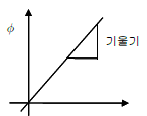
- 저항 R
- 인덕턴스 L
- 커패시턴스 C
- 컨덕턴스 G
(정답률: 8%)
63. 6Ω과 2Ω의 저항 3개를 그림과 같이 연결하였을 때, a, b 사이의 합성저항은 몇 Ω 인가?
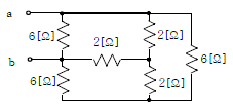
- 4
- 3
- 2
- 1
(정답률: 8%)
64. 주기적인 구형파의 신호는 그 성분이 어떻게 되는가?
- 성분분석이 불가능하다.
- 무수히 많은 주파수의 합성이다.
- 직류분만으로 합성된다.
- 교류합성을 갖지 않는다.
(정답률: 13%)
65. 다음 중 전류원의 내부 저항에 관하여 가장 옳은 것은?
- 정류 공급을 받는 회로의 구동적 임피던스와 같아야 한다.
- 경우에 따라 다르다.
- 작을수록 이상적이다.
- 클수록 이상적이다.
(정답률: 9%)
66. 어떤 회로의 전류가 I(t) = 20 - 20e-200t[A]로 주어졌다. 정상값은 몇 A 인가?
- 5
- 12.6
- 15.6
- 20
(정답률: 9%)
67. 무손실 전송선로에서 L = 96mH, C = 0.6㎌ 일 때 특성 임피던스는 몇 Ω 인가?
- 100
- 200
- 300
- 400
(정답률: 12%)
68. 어떤 교류 전압의 평균치가 382V 일 때 실효치 값은 약 몇 V인가?
- 424
- 342
- 240
- 125
(정답률: 9%)
69. 회로에서의 전압비 전달함수
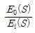
는?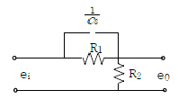
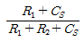
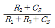
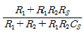
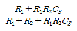
(정답률: 11%)
70. 그림과 같은 회로의 4단자 정수 중 A 의 값은 어떻게 되는가?
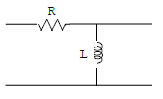
- 1+R/sL
- R
- 1/sL
- 1
(정답률: 14%)
71. 반전 연산회로의 출력을 바르게 표현한 것은? (단, OP 증폭기는 이상적인 것으로 생각한다.)
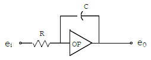
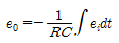
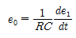
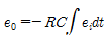
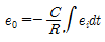
(정답률: 10%)
72. 주파수 응답에 의한 위치제어계의 설계에서 계통의 안정도 척도와 관계가 적은 것은?
- 공전차
- 고유주파수
- . 위상여유
- 이득여유
(정답률: 6%)
73. 개루프 전달함수가
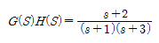
인 부궤혼제어계의 특성방정식은?- s2 +4s+3=0
- s2+5s+5=0
- s2 +5s+6=0
- s2+6s+5=0
(정답률: 6%)
74. 라플라스 변환값과 Z 변환값이 같은 함수는?
- t2
- t
- Un(t)
- δ(t)
(정답률: 8%)
75. 프로세스제어, 자동조정과 같이 목표값이 시간에 따라 변화하지 않는 제어방식은?
- 비율제어
- 정치제어
- 추종제어
- 프로그램제어
(정답률: 8%)
76. 다음의 미분방정식으로 표시되는 시스템의 계수 행렬 A는 어떻게 표시되는가?
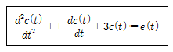
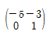
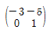
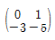
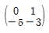
(정답률: 9%)
77. 이득이 60dB의 전압 증폭도는?
- 10,000
- 1,000
- 100
- 10
(정답률: 8%)
78. 상태방정식
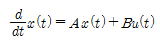
, 출력 방정식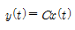
에서,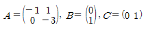
일 때 다음 설명 중 옳은 것은?- 이 시스템은 제어 및 관측이 가능하다.
- 이 시스템은 제어는 가능하나 관측은 불가능하다.
- 이 시스템은 제어는 불가능하나 관측은 가능하다.
- 이 시스템은 제어 및 관측이 불가능하다.
(정답률: 8%)
79. 안정된 제어계의 특성근이 2개의 공역복소근을 가질때 이 근들이 허수측 가까이에 있는 경우 허수측에서 멀리 떨어져 있는 안정된 근에 비해 과도응답 영향은 어떻게 되는가?
- 과도응답은 천천히 사라진다.
- 과도응답이 길다.
- 과도응답은 빨리 사라진다.
- 과도응답에는 영향을 미치지 않는다.
(정답률: 6%)
80. Z 변환법을 사용한 샘플치 제어계가 안정되려면 1 + G H(Z) = 0 의 근의 위치는?
- Z 평면의 좌반면에 존재하여야 한다.
- Z 평면의 우반면에 존재하여야 한다.
- |Z| = 1 단위 원내에 존재하여야 한다.
- |Z| = 1 단위 원밖에 존재하여야 한다.
(정답률: 12%)
5과목: 전기설비기술기준 및 판단기준
81. 지중에 매설되어 있으며, 대지와의 전기저항값이 몇 Ω 이하의 값을 유지하고 있는 금속제 수도관로는 접지 공사의 접지극으로 사용할 수 있는가?
- 1
- 2
- 3
- 5
(정답률: 6%)
82. 전로에 시설하는 기계기구 중에서 외함 접지공사를 생략할 수 없는 경우는?
- 380V의 전동기를 건조한 목재의 마루위에서 취급 하도록 시설하는 경우
- 철대 또는 외함의 주위에 적당한 절연대를 설치하는 경우
- 220V의 모발 건조기를 2중 절연하여 시설하는 경우
- 정격감도전류 100mA, 동작시간이 0.5초인 전류 동작형 인체감전 보호용 누전차단기를 시설하는 경우
(정답률: 10%)
83. 사용전압이 35,000V 이하이고 케이블을 사용하는 특별 고압 가공인입선이 도로, 횡단보도교 등을 횡단하지 않으면 지표상 몇 m 까지 시설할 수 있는가?
- 3
- 4
- 5
- 6
(정답률: 2%)
84. 지중전선로를 직접 매설식에 의하여 차량 기타 중량물의 압력을 받을 우려가 있는 장소에 시설할 경우에는 그 매설 깊이를 최소 몇 m 이상으로 하여야 하는가?
- 1.0
- 1.2
- 1.5
- 1.8
(정답률: 11%)
85. 고압 가공전선이 가공 약전류전선 등과 접근하는 경우에 고압 가공전선과 가공 약전류전선 사이의 이격거리는 전선이 케이블인 경우 몇 cm 이상이어야 하는가?
- 20
- 30
- 40
- 50
(정답률: 4%)
86. 사용전압이 35,000V 이하인 특별고압 가공전선이 건조물과 제2차 접근상태로 시설되는 경우에 특별고압 가공 전선로는 어떤 보안공사를 하여야 하는가?
- 제1종 특별고압 보안공사
- 제2종 특별고압 보안공사
- 제3종 특별고압 보안공사
- 제4종 특별고압 보안공사
(정답률: 11%)
87. 중성점이 접지되고 다중접지된 중성선을 가지는 전로에 접속하는 최대사용전압이 7,000V 인 변압기는 몇 V의 절연내력 시험전압에 견디어야 하는가?
- 6,440
- 7,700
- 8,750
- 10,500
(정답률: 4%)
88. 1차 22,900V, 2차 3,300V 의 변압기를 옥외에 시설할때 구내에 취급자 이외의 사람이 들어가지 아니하도록 울타리를 시설하려고 한다. 이 때 울타리의 높이는 몇m 이상으로 하여야 하는가?
- 2
- 3
- 4
- 5
(정답률: 6%)
89. 정격 전류 30A 의 전동기 1대와 정격 전류 5A 의 전열기 2대에 공급하는 저압 옥내 간선을 보호할 과전류 차단기의 정격 전류의 초대값은 몇 A 인가?
- 40
- 60
- 80
- 100
(정답률: 4%)
90. 사용 전압이 154kV 인 가공 송전선의 시설에서 전선과 직물과의 이격거리는 일반적인 경우에 몇 m 이상으로 하여야 하는가?
- 2.8
- 3.2
- 3.6
- 4.2
(정답률: 12%)
91. 전선로의 종류에 속하지 않는 것은?
- 지중전선로
- 수상전선로
- 광산전선로
- 터널내전선로
(정답률: 6%)
92. 점검 할 수 있는 은폐장소의 저압 옥내 배선에서 사용 할 수 없는 켑 타이어 케이블은?
- 1종 켑타이어 케이블
- 2종 켑타이어 케이블
- 3종 켑타이어 케이블
- 4종 켑타이어 케이블
(정답률: 5%)
93. 변전소를 관리하는 기술원 주재소에 경보장치를 시설하지 아니하여도 되는 것은?
- 주요 변압기의 전원측 전로가 부전압으로 된 경우
- 특별 고압용 터널식 변압기의 냉각장치가 고장난 경우
- 출력 2,000KVA 특별 고압용 변압기의 온도가 현저히 상승한 경우
- 조상기 내부에 고장이 생긴 경우
(정답률: 6%)
94. 특별고압 가공전선로를 제2종 특별고압 보안공사에 의해서 시설할 수 있는 경우는?
- 특별고압 가공전선이 가공 약전류전선 등과 제1차 접근상태로 시설되는 경우
- 특별고압 가공전선이 가장 약전류전선의 위쪽에서 교차하여 시설되는 경우
- 특별고압 가공전선이 도로 등과 제1차접근상태로 시설되는 경우
- 특별고압 가공전선이 철도 등과 제1차접근상태로 시설되는 경우
(정답률: 8%)
95. 풀용 수중조명등에 전기를 공급하기 위하여 1차측 120V, 2차측 30V의 절연변압기를 사용하였다. 절연변압기의 2차측 전로의 접지에 대한 방법이 옳은 것은?
- 제1종 접지공사로 접지한다.
- 제2종 접지공사로 접지한다.
- 특별제3종접지공사로 접지한다.
- 접지하지 않는다.
(정답률: 5%)
96. 시가지외에 가설되는 사용전압 220V 가공전선을 절연전선으로 사용하는 경우 그 최소굵기는 지름 몇 mm인가?
- 2
- 2.6
- 3.2
- 4
(정답률: 10%)
97. 교류식 전기철도는 그 단상부하에 의한 전압의 불평형으로 인하여 전기철도 변전소의 변압기에 접속하는 전기사업용 발전기, 조상기, 변압기, 기타의 기계기구에 장해가 생기지 않도록 시설해야 하며, 전압 불평형의 허용 한도는 그 변전소의 수전점에서 몇 % 로 하는가?
- 3
- 4
- 5
- 6
(정답률: 10%)
98. 네온 방전관을 사용한 사용전압 12,000V 인 방전등에 사용되는 네온 변압기 외함의 접지공사로서 알맞은 것은?
- 제1종 접지공사
- 제2종 접지공사
- 제3종 접지공사
- 특별 제3종 접지공사
(정답률: 8%)
99. 옥내에 시설하는 저압 전선으로 나전선을 사용하여서는 아니되는 경우는?
- 금속덕트공사에 의한 전선
- 버스덕트공사에 의한 전선
- 이동기중기에 사용되는 접속전선
- 전개된 곳의 애자사용공사에 의한 전기로용 전선
(정답률: 9%)
100. 전력보안통신설비로 무선용안테나 등의 시설에 관한 설명으로 옳은 것은?
- 항상 가공전선로의 지지물에 시설한다.
- 접지와 공용으로 사용할 수 있도록 시설한다.
- 전선로의 주위 상태를 감시할 목적으로 시설한다.
- 피뢰침설비가 불가능한 개소에 시설한다.
(정답률: 11%)
왼쪽 위 광원에서 P까지의 거리: √(h^2 + (a/2)^2)
오른쪽 위 광원에서 P까지의 거리: √(h^2 + (a/2)^2)
왼쪽 아래 광원에서 P까지의 거리: √((h-a)^2 + (a/2)^2)
오른쪽 아래 광원에서 P까지의 거리: √((h-a)^2 + (a/2)^2)
따라서 수평면 조도는 다음과 같다.
I/(h^2 + (a/2)^2) + I/(h^2 + (a/2)^2) + I/((h-a)^2 + (a/2)^2) + I/((h-a)^2 + (a/2)^2)
이를 최대화하기 위해 미분하면 다음과 같다.
-2Ih/(h^2 + (a/2)^2)^2 - 2Ih/((h-a)^2 + (a/2)^2)^2 + 2I(h-a)/((h-a)^2 + (a/2)^2)^2 = 0
이를 정리하면 다음과 같다.
h^4 - 2a^2h^3 + (a^4 + 4a^2h^2)^(3/2) = 0
이는 4차 방정식이므로 해를 구하기 어렵다. 하지만 a가 일정하다는 조건이 있으므로 a에 대한 함수로 변환하여 최대값을 구할 수 있다.
h^4 - 2a^2h^3 + a^6 = 0
이를 h로 풀면 다음과 같다.
h = a^2/(2h) = a/2 * √(2)
따라서 정답은 "a/√2"이다.